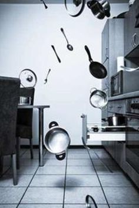

Poltergeistas - vaiduoklis, kuris tariamai judina namuose esančius daiktus. Poltergeistų istorijose dažni motyvai yra žingsnių garsas be regimo šaltinio, įvairūs bildėjimai ir žvangėjimai, beldimai. Dažnai įvairūs daiktai pradeda skraidyti po patalpą, neretai pasitaiko savaime judantys baldai. Kartais net pasitaiko, kad šios paslaptingos jėgos pradeda judinti žmones, levitacijos atvejai. Labai retose poltergeistų istorijose šie kalba.
Tikintys poltergeistų realumu nurodo šias pagrindines hipotezes:
Visi šie paaiškinimai kol kas neturi jokio realaus pagrindo ir tinkamiau juos būtų vadinti spėjimais, su sąlyga, kad poltergeisto reiškiniai apskritai egzistuoja. Skeptikai teigia, kad visos poltergeistų istorijos yra gandai arba sąmoningos klastotės. Kol kas nėra nei vieno patikimo pranešimo apie savaime judančius daiktus, tačiau nemažai pranešimų yra atskleista kaip klastotės. Neretai pasitaiko, kad istorijas apie kažkurioje užeigoje ar tavernoje esantį poltergeistą skleidžia patys savininkai, suinteresuoti pritraukti daugiau smalsių lankytojų.
Kaip spręsti poltergeisto problemą? Jeigu abejonių dėl poltergeisto nėra, kyla klausimas: ką dabar reikėtų daryti? Vienas būdas reikalauja daug kantrybės – reikia tiesiog išlaukti, kol tai praeis. Vidutinė poltergeisto trukmė – apie pora savaičių. Retai gali trukti iki kelių mėnesių. Reikia įvertinti, kaip labai tai trukdo. Jeigu tai nieko daugiau negu pora daiktų, kurie kilnojami iš vienos vietą į kitą ar retkarčiais link jūsų atskriejantis akmenukas, nereikėtų kelti panikos. Tačiau jeigu poltergeistas tikrai gąsdina ir jo nebegalima toleruoti, tai galima ieškoti pagalbos. Egzorcizmas.Vaiduoklių apsireiškimo atvejais žmonės pirmiausia kreipiasi į dvasininkus ir prašo palaiminti jų namus. Blogiau nebus, bet dažnai nuo poltergeisto tai nepadeda. Be to, jeigu hipotezė, kad poltergeistas nėra kokia nors būtybė (demonas, mirusio žmogaus dvasia), yra teisinga, egzorcizmas gali būti visiškai neveiksmingas. Kad ir kaip keistai tai skambėtų, regis, efektyviausias būdas, kaip sustabdyti poltergeistą – tai kreiptis į jį tiesiogiai ir paprašyti nustoti kelti sumaištį namuose ir išeiti.
Psichologinė pagalba. Kilus įtarimams, kad poltergeistas yra tiesiogiai susijęs su kokiu nors žmogumi, gali padėti psichoterapija. Kartai tai gali būti jauniausias šeimos narys. Identifikuoti asmenį galima ir atlikus tokį eksperimentą: paprašyti šeimos narių laikinai apsistoti kitoje vietoje negu namai. Pavyzdžiui, vaikus gali savaitgalį priimti dėdė ar teta. Poltergeistas jiems išvykus iš namų dingsta arba persikelia kartu su jais į kitą vietą. Identifikavus asmenis, nepulti kaltinti ir bausti. Gali būti, kad taip jie elgėsi sąmoningai patys to nesuprasdami. Praverstų konsultacija pas psichologą ir psichoterapija.
Geomantija. Geomantijos specialistai tyrinėja žemės energijas ir dalykus, kurie palengvina arba sutrikdo jų natūralų tekėjimą. Kai kuriais atvejais poltergeistas gali kilti, kai sutrinka žemės energijos pusiausvyra. Geomantijos specialistas gali patarti, kaip atkurti harmoniją gyvenamojoje aplinkoje.
Poltergeistai ne visada yra agresyvūs ir gąsdinantys. Kartais jie net gali atrodyti draugiški. Pavyzdžiui, fabriko darbininkai gali gana komfortabiliai jaustis poltergeisto kaimynystėje: kai vienas darbininkas garsiai pasako, kad jam reikia tam tikro įrankio ir staiga tiesiai priešais jį tas įrankis nukrinta. Paprastai nereikia labai išsigąsti, kilus įtarimams apie poltergeistą. Neleiskite pinigų šarlatanams ir burtininkams, teigiantiems, kad padės atsikratyti poltergeisto. Dažniausiai tai tėra išlaidos, kurių jums visai nereikia. Jeigu tikrai reikės pagalbos, tai ji bus nemokama.
Informacija paimta iš www.priekavos.lt